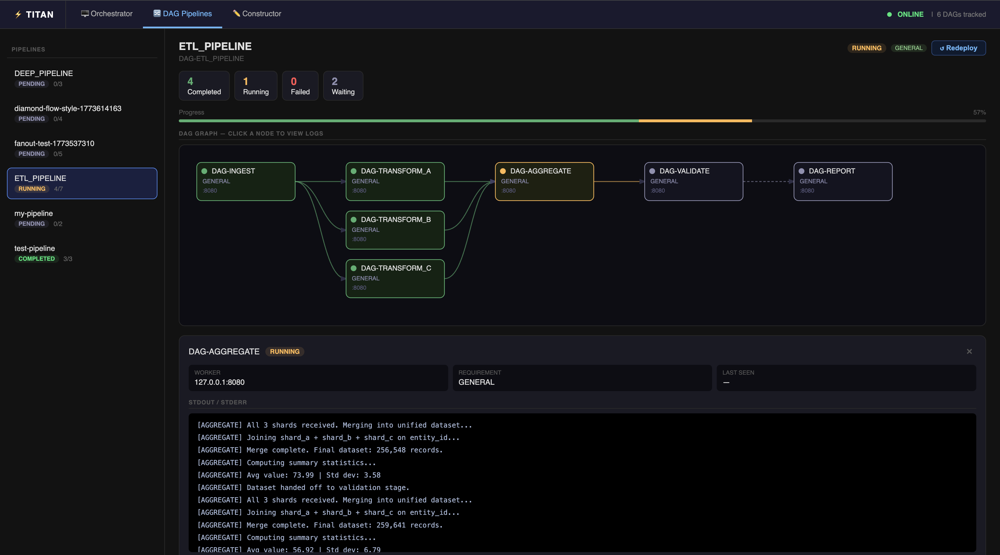
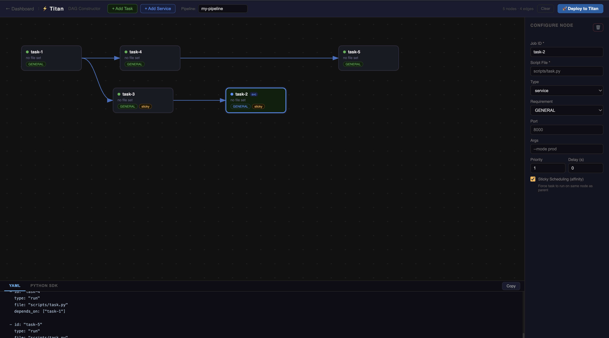

🚀 Getting Started
Get a Titan Master, Worker node, and the UI Dashboard running locally in under 5 minutes.
Prerequisites
Before you begin, ensure you have the following installed on your machine:
- Java 17+ (For the Core Engine)
- Python 3.10+ (For the SDK, CLI, and Dashboard)
- Maven (To build the Java project)
Building the Engine
1. Clone the Engine
Titan compiles down into a single, ultra-lightweight "Uber-JAR". We will build it and place it in the perm_files directory, which acts as Titan's artifact registry.
2. The Fast Track (Recommended)
We have included a unified bootstrap script that handles building the Java binaries, installing the Python SDK, and launching all background services automatically.
Make the script executable and launch the cluster:
LOGS OF RUNNING (Started and Stopped)
[INFO] Booting Titan Development Environment...
[OK] Engine JAR found.
[SETUP] Verifying Python SDK...
^CERROR: Operation cancelled by user
[OK] Python SDK ready.
[START] Starting TitanStore (Port 6379)...
[START] Starting Titan Master (Port 9090)...
[START] Starting General Worker (Port 8080)...
[START] Starting UI Dashboard (Port 5000)...
====================================================
TITAN CLUSTER IS LIVE
====================================================
[+] Master Node: localhost:9090 (PID: 5952)
[+] Worker Node: localhost:8080 (PID: 5991)
[+] TitanStore: localhost:6379 (PID: 5944)
[UI] Dashboard: http://localhost:5000
[+] View Logs: Open a new terminal and run: ./titan-dev logs
====================================================
[INFO] Cluster is running. Press [Ctrl+C] right here to safely shut down everything.
^C
[STOP] Caught exit signal! Commencing graceful teardown...
What this does in the background:
-
Compiles the Java core using Maven.
-
Installs the titan_sdk Python package in editable mode.
-
Starts TitanStore (Port 6379) for persistence.
-
Starts the Titan Master (Port 9090) control plane.
-
Starts a GENERAL Worker Node (Port 8080).
-
Starts the Flask UI Dashboard (Port 5000) if Flask is installed.
To safely shut down the entire cluster and free up your ports, simply press Ctrl+C in the terminal where the script is running.
Viewing Live Logs
Because the cluster runs cleanly in the background, you can stream the logs at any time. Open a new terminal tab and use the built-in log viewer:
# Watch all cluster traffic:
./titan-dev logs
# Or filter by specific components:
./titan-dev logs master
./titan-dev logs worker
3. Run Your First Task
Now that your local cluster is live, let's deploy a pre-configured YAML DAG using the Titan CLI.
Open a new terminal window (while your cluster is running) and execute:
python titan_sdk/titan_cli.py deploy titan_test_suite/examples/yaml_based_static_tests/dag_structure_test/agent.yaml
What just happened?
-
The CLI parsed the YAML definition and zipped the required Python scripts.
-
It dispatched the payload to the Master node via Titan's custom binary protocol.
-
The Master resolved the dependency graph and routed the tasks to your idle Worker node.
-
The Worker executed the code in an isolated workspace!
4. Open the Dashboard
If you have flask installed (pip install flask), the titan-dev script automatically started the UI.
Navigate to http://localhost:5000 in your browser to see your Worker node's live CPU/Thread load and the execution history of the DAG you just ran.
DAG Visualizer
Once a DAG has been submitted — via the CLI, Python SDK, YAML, or the Constructor — open the DAG Pipelines tab in the dashboard to see it rendered as a live graph. Node colors update in real-time as jobs move through PENDING → RUNNING → COMPLETED / FAILED.
This works for any submission method. YAML and SDK-based pipelines are represented accurately with full structure. Dynamic DAGs are visualized based on the graph submitted to the Master at runtime. Agentic DAGs will appear and grow as the agent submits new work — the full graph may not be known upfront, but everything submitted will be visible.

Visual DAG Constructor
Rather than writing YAML or SDK code, you can build and deploy pipelines directly from the browser.
Open the DAG Constructor at http://localhost:5000/dags/new:
- Add nodes — each node represents a job. Set the Job ID, script filename, requirement (GENERAL / GPU), args, priority, and delay.
- Draw edges — click and drag from the output port of one node to the input port of another to define dependencies.
- Deploy — hit the Deploy button to submit the pipeline to the running cluster.
The Constructor also auto-generates the equivalent Python SDK and YAML code in the output panel, which you can copy for reuse in automated pipelines.
Note: The Deploy button submits jobs by reading script files from the Master's
perm_filesdirectory by filename. Make sure any scripts you reference in the Constructor already exist inperm_filesbefore clicking Deploy.

5. Advanced: Manual & IDE Setup
Option 5: Run via IntelliJ (Recommended for Dev)
If you are developing Titan, simply open the project in IntelliJ IDEA and run the Main classes directly:
- Master: Run
titan.TitanScheduler - Worker: Run
titan.TitanWorker(Defaults to Port 8080, Capability: GENERAL, Permanent: False) - CLI: Run
titan.TitanCli
Option 5.1. Build the core engine
5.2 Stage the binary for execution (Optional, there will be a Worker.jar already there)
5.3 Configure the Runtime (titan.properties)
Titan uses an Adapter Pattern for its state management, meaning the persistence layer is entirely pluggable. To connect the Master to your Redis (TitanStore) instance for state recovery and data-bus features, create a titan.properties file in the root directory where you run the JAR.
A. Create titan.properties:
Properties
# TitanStore (Redis) Connection
titan.redis.host=localhost
titan.redis.port=6379
# Cluster Tuning
titan.worker.heartbeat.interval=10
titan.worker.pool.size=10
Note: If this file is missing, Titan will gracefully degrade to sensible defaults (purely in-memory execution with no persistence or recovery) or attempt to connect to Redis on localhost:6379.
B. Start TitanStore
Open a terminal and launch the persistence engine. It comes pre-bundled in the perm_files directory.
Expected Output Logs:STARTING as MASTER
>>> AOF FILE IS HERE: <PROJECT_DIR>/database6379.aof
Recovering data...
Performing data recovery with aof file
DEBUG STORAGE: Putting k1 with ttl -1
DEBUG MATH: No Expiry set (-1)
.......
Received: [SMEMBERS, system:active_jobs]
Received: [SADD, system:live_workers, 127.0.0.1:8080]
Received: [SET, worker:127.0.0.1:8080:load, 0]
DEBUG STORAGE: Putting worker:127.0.0.1:8080:load with ttl -1
Start the Cluster
5.4 Start TitanMaster and TitanWorker
Terminal 1 (The Master Scheduler):
This starts the control plane on default port 9090. It will listen for worker heartbeats and incoming DAG submissions.
Expected Output Logs
Clock Watcher Started...
Scheduler Core starting at port 9090
[INFO][SUCCESS] Connected to Redis for Persistence.
[INFO] Redis Persistence Layer Active
[INFO][RECOVERY] Scanning for orphaned jobs...
[INFO][RECOVERY] No stranded jobs found.
[OK] SchedulerServer Listening on port 9090
[INFO] Titan Auto-Scaler active.
Running Dispatch Loop
Incoming connection from /127.0.0.1 Port53797
Registering Worker: 127.0.0.1 with GENERAL
[INFO] New Worker Registered: 127.0.0.1:8080 [EPHEMERAL]
[TitanProto] Sent Op:80 Len:10
Sending Heartbeat
[TitanProto] Sent Op:1 Len:0
Sending Heartbeat
[TitanProto] Sent Op:1 Len:0
[SCALER] Cluster Pressure: 0/4
Sending Heartbeat
....
Terminal 2 (The Default Worker Node):
This starts a general-purpose hardware node. By default, it connects to the local Master on port 9090 and opens itself for task execution on port 8080.
Expected Output Logs
** Starting Titan Worker Node**
Local Port: 8080
Master: localhost:9090
Capability: GENERAL
Mode: EPHEMERAL (Auto-Scaleable)
DEBUG: Attempting to bind to port: 8080
---- Worker Startup Check ----
[INFO] [ZOMBIE KILLER] Checking for leftover processes...
Worker Server started on port 8080
[TitanProto] Sent Op:2 Len:20
[OK] Successfully registered with Scheduler!
[TitanProto] Sent Op:80 Len:8
[TitanProto] Sent Op:80 Len:8
[TitanProto] Sent Op:80 Len:8
(You should immediately see a "Worker Registered" log appear in Terminal 1).
⚡ Advanced Worker Configurations You can easily spawn specialized nodes by passing arguments:
[Port] [MasterIP] [MasterPort] [Capability] [isPermanent]Example: Spawn a persistent GPU worker on port 8081:
Expected Output:
** Starting Titan Worker Node**
Local Port: 8081
Master: localhost:9090
Capability: GPU
Mode: PERMANENT (Protected)
DEBUG: Attempting to bind to port: 8081
---- Worker Startup Check ----
[INFO] [ZOMBIE KILLER] Checking for leftover processes...
Worker Server started on port 8081
[TitanProto] Sent Op:2 Len:15
[OK] Successfully registered with Scheduler!
[TitanProto] Sent Op:80 Len:8
5.6 Install the Python SDK
The Titan Python SDK allows you to submit jobs, define DAGs, and interact with the cluster programmatically.
Open a third terminal window and install the SDK in editable mode:
6. Run Your First Task (Manual Setup)
Once your cluster is up via the manual steps above, deploy the same YAML DAG:
python titan_sdk/titan_cli.py deploy titan_test_suite/examples/yaml_based_static_tests/dag_structure_test/agent.yaml
What just happened?
- The CLI parsed the YAML definition and zipped the required Python scripts.
- It dispatched the payload to the Master node via Titan's custom binary protocol.
- The Master resolved the dependency graph and routed the tasks to your idle Worker node.
- The Worker executed the code in an isolated workspace!
7. Open the Dashboard (Optional)
Titan includes a lightweight Flask dashboard to visualize cluster health and stream live logs. To spin it up, run:
Navigate to http://localhost:5000 in your browser to see your Worker node's live CPU/Thread load and the history of the DAG you just ran.
To build and deploy a DAG visually, open http://localhost:5000/dags/new. See Step 4 above for full instructions.
This is an external dependency and you will need to install Flask alone for this to work. This is not part of the engine and is an extension so its an external dependency.